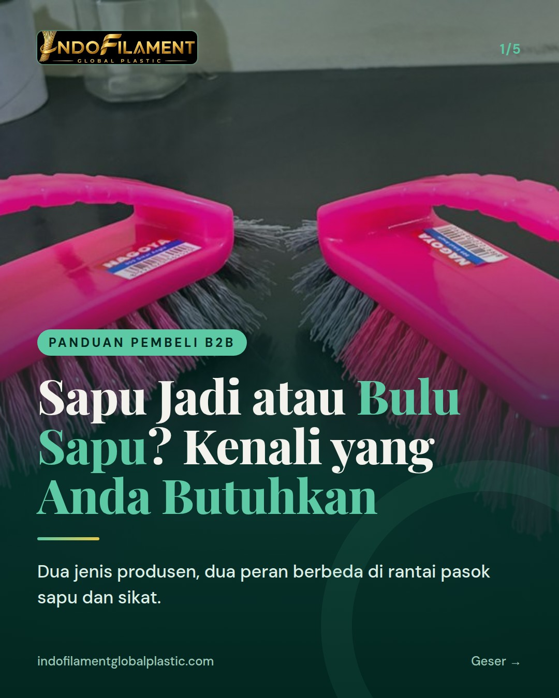
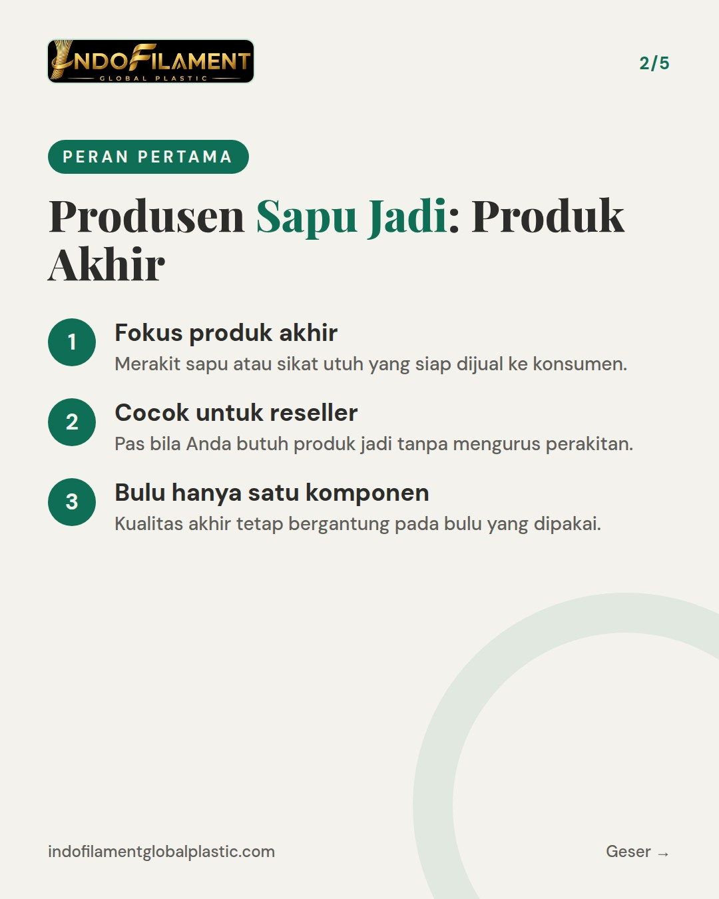
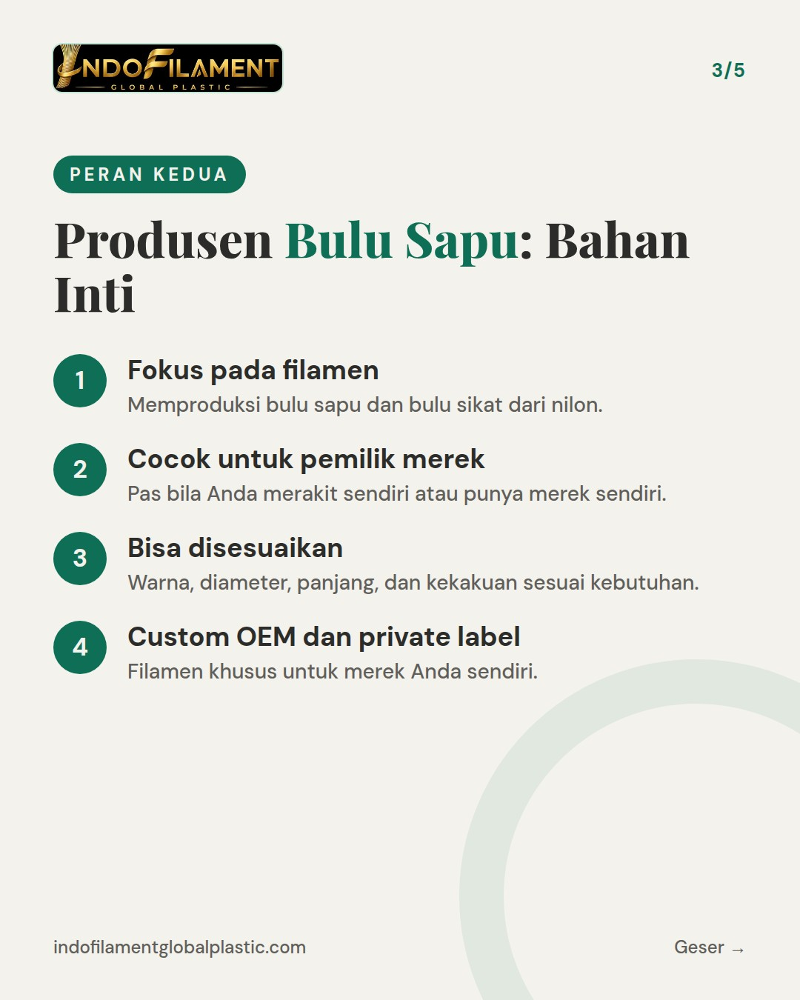
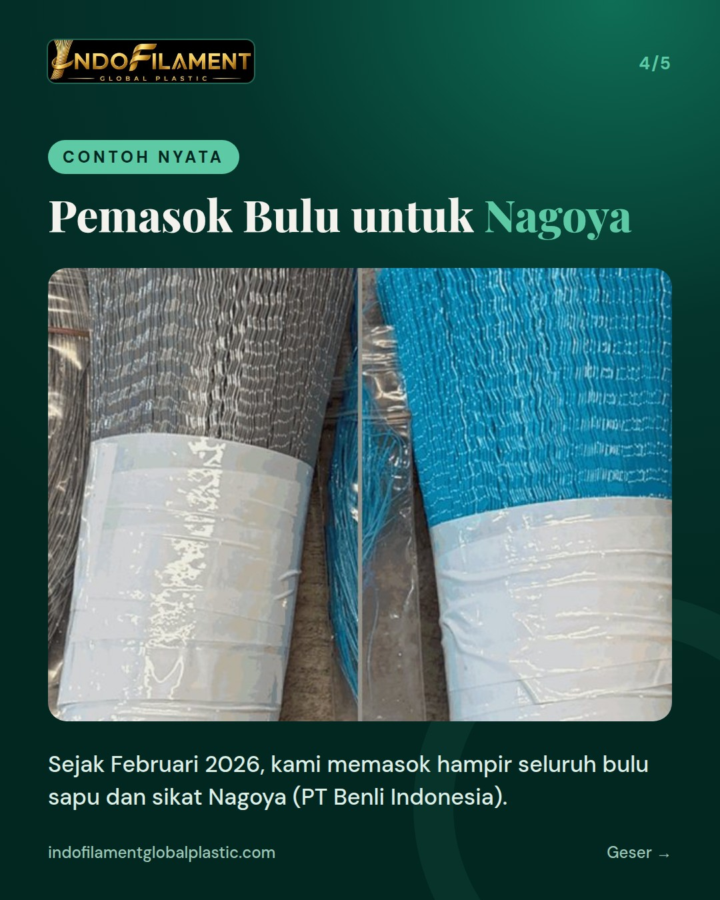
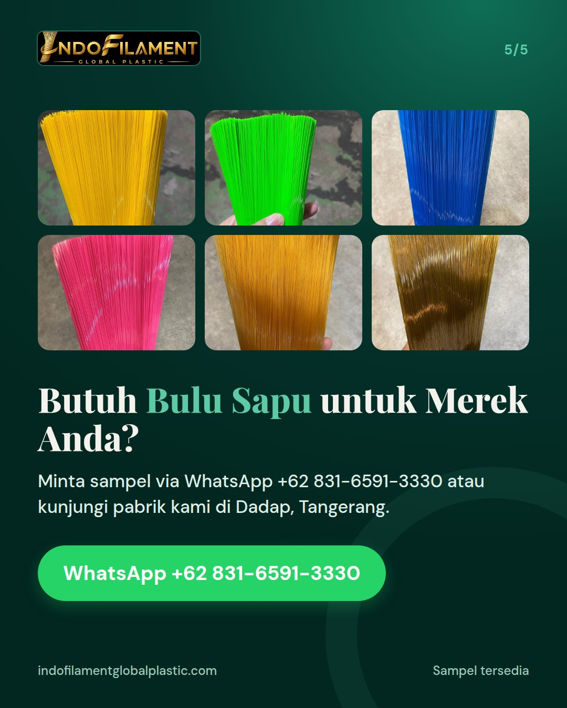

Bedanya produsen sapu jadi vs produsen bulu sapu: siapa yang Anda butuhkan





Mau membuat sapu atau sikat dengan merek sendiri, tapi bingung harus mulai dari produsen yang mana? 🤔 Ada dua peran berbeda di rantai pasok: 🧹 Produsen sapu jadi: merakit produk akhir yang siap dijual ke konsumen. 🧵 Produsen bulu sapu: membuat filamen nilon sebagai bahan inti, untuk Anda rakit sendiri atau dipasang pada merek Anda. PT Indofilament Global Plastic berada di sisi kedua. Dari pabrik kami di Tangerang, kami memproduksi bulu sapu dan bulu sikat dengan mesin filamen modern, kapasitas hingga 5 ton per hari, dari bahan baku plastik daur ulang yang ramah lingkungan. Warna, diameter, panjang, dan kekakuan bisa disesuaikan, termasuk custom OEM dan private label. Sejak Februari 2026, kami juga memasok hampir seluruh bulu sapu dan sikat merek Nagoya milik PT Benli Indonesia. Minta sampel via WhatsApp +62 831-6591-3330 atau DM kami. Pabrik juga terbuka untuk dikunjungi. For export buyers: we are a broom and brush filament manufacturer in Tangerang, Indonesia, offering custom OEM and private label. Contact us for samples. #bulusapu #bulusikat #filamen #pabriksapu #pabriksikat #madeinindonesia #broomfilament #brushfilament #nylonfilament #privatelabel #customOEM #manufakturindonesia